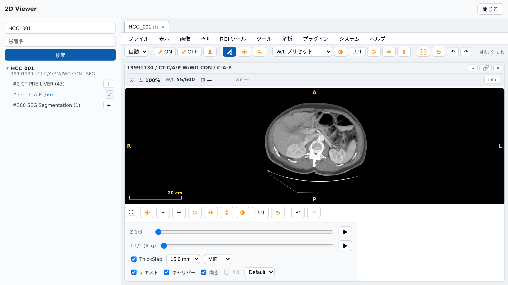
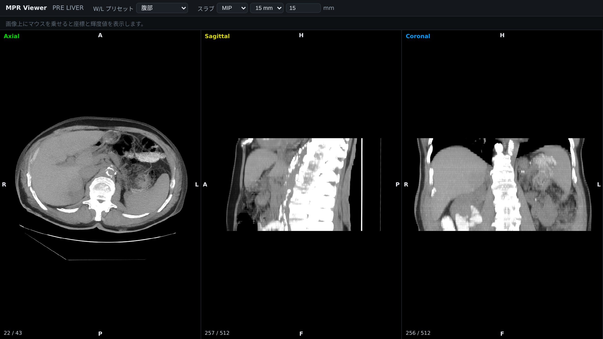
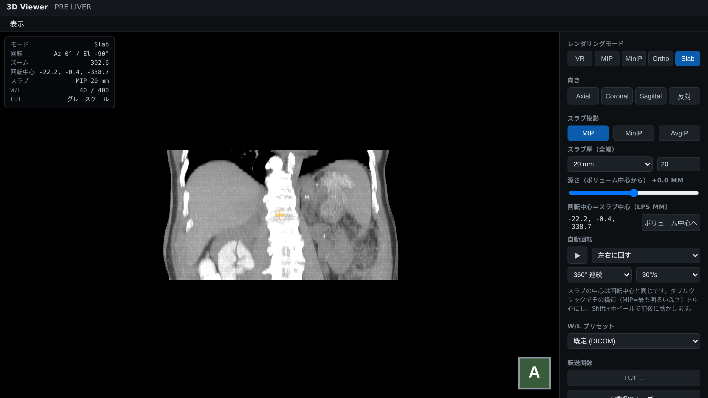

GRAPHY-NEXT v0.3.5 / 操作ガイド
厚みのある範囲を 1 枚に投影して、血管や骨・石灰化のつながりを見やすくする機能です。2D・MPR・3D の 3 か所で使えます。
demo.vis-ionary.com を開くデスクトップ版でも同じ手順です
スタディ一覧で患者 ID HCC_001 を検索
2D は #3 C-A-P（造影）、MPR・3D は #2 PRE LIVER を選ぶどちらもスライス厚 5 mm の CT
ツールバーの 2D Viewer・MPR Viewer・3D Viewer で開く
STEP 1 / 2D Viewer・#3 C-A-P

メニュー「表示」→「Slab MIP」→「MIP（最大値投影・5mm）」
ThickSlab の厚みを 15 mm に。造影された血管が線としてつながります
投影方式を切り替え。MIP・MinIP・AvgIP
ホイールで送ると、厚みを保ったまま上下に動きます。
ThickSlab 中は ROI・計測を作れません。測るときは Original に戻します。
STEP 2 / MPR Viewer・#2 PRE LIVER

ヘッダの「スラブ」で MIP を選ぶ
厚み（全幅 mm）を 15 に。Axial・Sagittal・Coronal の 3 面に同時に効きます
5 mm 未満は元の画像とほぼ同じ。10 mm 以上で違いが分かります。
MinIP は 3 mm、AvgIP は 5 mm が目安。W/L プリセットは「腹部」にしています。
STEP 3 / 3D Viewer・#2 PRE LIVER

レンダリングモード「Slab」
スラブ投影「MIP」
スラブ厚 20 mm
向き「Coronal」で正面から
自動回転 ▶ で左右に回して見せる
| 操作 | 動き |
|---|---|
| ダブルクリック | 最も明るい深さを回転中心に |
| Shift＋ホイール | スラブと回転中心が前後に |
| 左ドラッグ | 回転中心のまわりで回る |